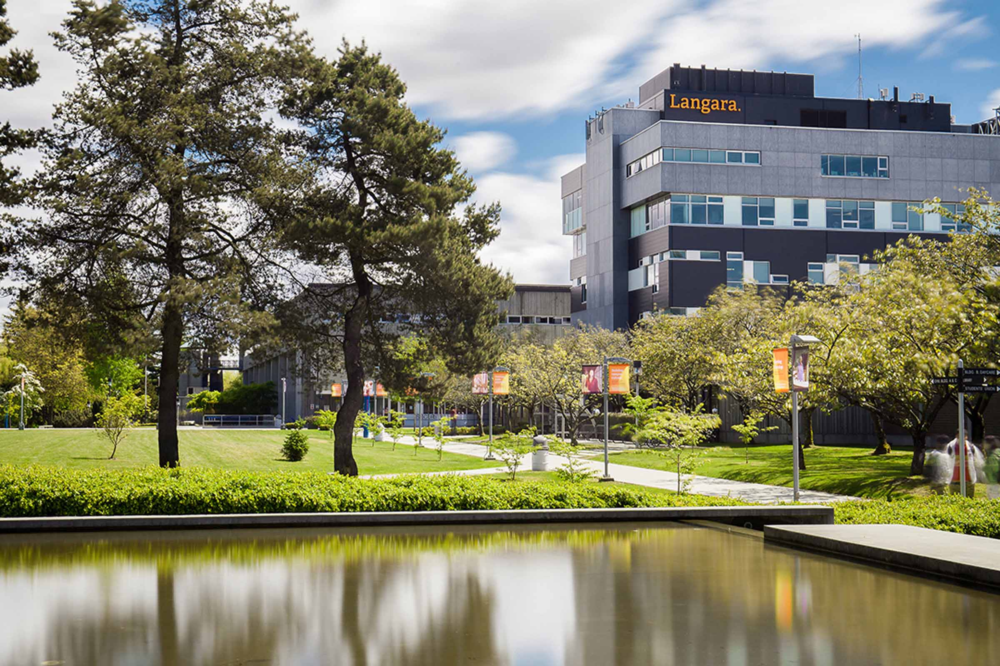

Luong The Vinh High School
Luong The Vinh High School is one of the most well-known school in Hanoi, Vietnam. It is famous for good education, various extracurricular activities, and strict rules to make students become better persons. Studying in this education environment gave me a chance to build up positive characteristic by not only studying from great teachers, but also from good friends. I also actively got involved in different volunteer activities at school, enhancing my soft skills and social skills.
Langara
Langara College is one of the top colleges in British Columbia, Canada, and it has become my choice of studying abroad. The school is in the heart of beautiful Vancouver and near bus stop as well as train station, which is very convenience for students who use public vehicles as the main way of transport. I am now studying Science & Technology, and with the help of successful instructors in this school, I am creating the foundation knowledge for my future career.